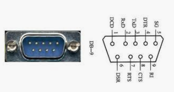

串口流控开发
串口通讯的流控提供了由于某种原因不能进行通讯时阻塞通讯的一种机制。流控可以使数据接收设备在不能接收数据时通知数据发送设备，使其停止发送。 串口的流控经常采用硬件流控和软件流控两种方式。
本文将对硬件流控和软件流控进行详细的介绍。在以下的讨论中将计算机简称为数据终端设备（DTE）,通过串行端口与计算机进行数据交换的外设称为数据通讯设备（DCE）。输出流控指 DTE 输出数据时的流控方式；输入流控指 DTE 输入数据时的流控方式。
RS-232C 接口引线以及 DCB 控制结构简介

计算机 9 针 RS-232C 接口引线信号定义、分类及功能如表 1 所示。
在计算机串口的引线中，除了 TxD、RxD 和信号地其余的控制线不是必需的。DTE 与 DCE 之间最简单的应用接法，仅需将 DTE 与 DCE 的接收数据引线和发送数据引线交叉连接，信号地相连，其余的控制线均不用。需要硬件流控时可根据需要连接对应的引线。表 1 计算机 9 针 RS-232C 接口引线信号定义、分类及功能
| 引脚号 | 信号名称 | 简称 | 方向 | 信号功能 |
1 |
数据载波检测 |
DCD |
DTE← |
DCE已接收到远程信号 |
2 |
接收数据 |
RxD |
DTE← |
DTE接收串行信号 |
3 |
发送数据 |
TxD |
→DCE |
DTE发送串行信号 |
4 |
数据中断就绪 |
DTR |
→DCE |
DTE准备就绪 |
5 |
信号地 |
— |
— |
信号地 |
6 |
数传设备就绪 |
DSR |
DTE← |
DCE准备就绪 |
7 |
请求发送 |
RTS |
→DCE |
DTE请求切换到发送方 |
8 |
清除发送 |
CTS |
DTE← |
DCE切换到准备接收 |
9 |
振铃指示 |
RI |
DTE← |
通知DTE,通信线路已妥 |
串行通讯程序设计中的重要方面是对串行端口的设置。DCB（Device ControlBlock）结构中定义了
Windows 平台下串口通信设备的控制设置。串行端口设置就是对 DCB 结构成员进行设置。DCB 结构中的成员可以查看 Microsoft Msdn Library。DCB 结构中与硬件流控有关的成员有 fOutxCtsFlow,fOutxDsr-Flow,fDsrSensitivity,fRtsControl,fDtrControl；与软件流控的成员有 fOut,fInX,XoffChar,XonChar,XoffLim 和 XonLim。当不使用流控时这些成员的值全部为零。
流控方式分类
硬件流控
RTS/ CTS 方式
DTR/ DSR 方式
软件流控
硬件流控
硬件流控使用串行电缆控制线上的电压信号来控制数据的发送和接收。DTE 和 DCE 在通讯过程中必须使用相同的流控方式。设置 DCB 结构仅仅配置了
DTE， 必须对 DCE 进行必要的设置以确保 DTE 和
DCE 使用相同类型的流控。串口通讯中的硬件流控有两种方式：DTR / DSR 方式和 RTS / CTS 方式。实际采用的方式和 DCB 结构的初始化有关。DCB结构中fOutxCtsFlow、fOutxDsrFlow、fDsrSensitivty、fRtsCon-
trol、fDtrControl 几个成员的初始值很关键。不同的值代表不同的流控。
1) RTS/ CTS 方式。与这种方式有关的 DCB结构成员为 fOutxCtsFlow 和 fRtsControl。在输入流控中，
DTE 设置 RTS 控制线为高电平表示 DTE 准备就绪； 设置 RTS 控制线为低电平表示 DTE 尚未准备就绪。在输出流控中，DCE 设置 CTS 控制线为高电平，表示
DCE 准备好可以接收数据；置 CTS 控制线为低电平， 表示 DCE 不能接收数据。
DCB 结构的成员 fRtsControl 指定 RTS 输入流控。 它可能的取值为 RTS_CONTROL_DISABLE、RTS_CONTROL_ENABLE、RTS_CONTROL_HAND-SHAKE。该成员默认值为 RTS_CONTROL_HAND-SHAKE。
当设置它的值为 RTS_CONTROL_HANDSHAKE 时，输入流控过程如下：如接收缓冲区有足够的空间接 收数据（至少一半的缓冲区是空的）置 RTS 为高，指定DCE 可以开始传输数据；如果接收缓冲区没有足够空间（少于 1 / 4 的缓冲区是空的）置低 RTS，指定 DCE 阻塞数据的传输。当设置fRtsControl 的值为RTS_CON-TROL_DISABLE、RTS_CONTROL_ENABLE 时，应用程序可以自由设置 RTS 的状态，在这种情况下，该控制线的状态不影响接收。DCE 在 RTS 为低时阻塞数据的传输；RTS 为高时恢复数据的传输。
DCB 结构的成员 fOutxCtsFlow 指定在输出流控中是否监控 CTS 控制线的状态。如果该成员设置为TRUE,而 CTS 控制线为低，DTE 输出将被阻塞直到该控制线变为高如果该成员被置为 FALSE,CTS 控制线状态不影响数据的传输。CTS 的状态由 DCE 控制， DTE 仅仅监控该控制线状态，而不能改变它的状态。
2) DTR/ DSR 方式。与这种方式有关的 DCB结构成员为 fOutxDsrFlow、fDsrSensitivity 和 fDtrControl。本文介绍 fOutxDsrFlow 和 fDtrControl。在输出流控中，DCE 设置 DSR 控制线为高电平，表示 DCE 准备好可以接收数据；置 DSR 控制线为低电平，表示 DCE 不能接收数据。在输入流控中，DTE 设置 DTR 为高表示 DTE 由足够的缓冲区接收数据；否则 DTE 没有足够的缓冲区接收数据。
DCB 的成员 fOutxDsrFlow 指定在输出流控中是否监控 DSR 控制线的状态。 如果该成员设置为TRUE,而DSR 控制线为低，输出将被阻塞直到该控制线变为高如果该成员被置为FALSE,DSR 控制线状态不影响数据的传输。DSR 的状态由 DCE 控制，DTE仅仅监控该控制线状态。
DCB 的成员 fDtrControl 指定 DTR 输入流控。DTR 控制线的状态有 DTE 控制。fDtrControl 取值为DTR_CONTROL_HANDSHAKE 使用下面的流控：如果接收缓冲区有足够的空间接收数据（至少一半的缓 冲区是空的）置 DTR 为高表示数据终端准备好；如果接收缓冲区没有足够空间（少于 1 / 4 的缓冲区是空的 ） 置 低 DTR；fDtrControl取值为 DTR_CON-TROL_DISABLE、DTR_CONTROL_ENABLE 程 序 可以自由的改变它的状态， 这时 DTR 的状态不影响接收。在数据输入过程中，DCE 在 DTR 置低时阻塞发送；当 DTR 恢复为高电平时，恢复发送。
采用硬件流控开发串口通讯程序的过程中，程序运行过程中需要不停改变 RTS,DTR 控制线的状态。可使 用 Windows API 函数 BOOL EscapeCommFunc- tion(HANDLE hFile, DWORD dwFunc)。该函数根据参数dwFunc 的值改变控制线 RTS,DTR 的状态。
软件流控
软件流控使用数据流中的两个特殊的字符，XOFF和 XON，来控制数据的接收和发送。二进制方式传输不能使用软件流控，否则 XOFF和 XON 出现在二进制数据中影响数据的传输。软件流控适用于文本方式的数据传输。为了使用软件流控，DCB 结构中的成员
fOutX 和 fInX必须设置为 TRUE。fOutX 控制输出流控，fInX 控制输入流控。程序中可以动态的设置流控使用的字符，XoffChar 设置输入输出流控中的 XOFF 使用的字符；XonChar 设置 XON 字符。在输入流控中，
XoffLim 成员设置了发送 XOFF 字符时输入缓冲区中最小的自由空间数目，当输入缓冲区中自由空间的数目低于设置值，发送XOFF 字符；XonLim 设置了发送 XON 字符时，输入缓冲区中最小的数据数量，当输入缓冲区中的数据数目小于这个值发送 XON 字符。
在输出流控中，DTE 接收到 XOFF 字符，数据发送将被阻塞直到接收到 XON 字符；DTE 接收数据不受影响。DCB 控制结构的 fOutX 成员控制这个功能。
DTE 接收到 XON 字符，从前由于接收到 XOFF 字符而阻塞的数据发送将恢复。DCB 控制结构的 fOutX 成员控制这个功能。
在输入流控中， 当接收缓冲区接近溢出时，DTE自动发送 XOFF 字符。发送 XOFF 字符的缓冲区自由空间的界限值由 XoffLim 指定。fInX成员控制这项功能。当接收缓冲区有较多的自由空间时，DTE 自动发送 XON 字符。发送 XON 字符自由空间的界限值由
XonLim 成员指定。fInX 成员控值这项功能。
流控的设置
开发串口通讯程序的过程中需要对串行端口进行设置，包括波特率、校验方式、停止位和数据位，也包括 流控方式的设置。端口设置就是对 DCB 结构成员进行设置。串行端口流控方式的设置采用的方法与设置 串口其他参数的方法相同，主要分为两种。
第一种方法为使用 API 函数：：GetCommState
（），该函数返回 DCB 结构的当前设置，然后直接修改
DCB 结构的设置值。该函数的使用方法如下：
DCB dcb={O};
If（！：：GetcommState(hComm,&dcb)）
return FALSE; / / 函数调用发生错误
else
/ / 已经取回 DCB 结构当前设置
第二种方法初始化DCB 结构的方法是手动设置。程序首先分配 DCB 结构，然后将其中的每个成员设置成期望值。
无论采用哪种方法，要使对 DCB 结构的设置值对串行端口的行为产生影响， 必须调用 API 函数：：
SetCommState（）。
结束语
开发串口通讯程序的过程中，可根据实际需要决定是否采用流控，采用硬件流控还是软件流控。使用控 件 Mscomm32 开发串口通讯程序简单直接，若需要计算机协调与外设的数据传数时，这种方法不能满足要求； 直接调用 WIN32 API 函数的开发串口通讯程序，可以灵活的对串口进行设置，但需要较多的 Win-dows 编程背景知识。
串口通信连接过程实例SERIAL_HANDFLOW参数比较
连接过程 |
无流控： |
Cts/Rts硬流控 |
DSR/DTR硬流控 |
XonXoff软流控： |
IOCTL_SERIAL_SET_TIMEOUTS ReadIntervalTimeout: ReadTotalTimeoutMultiplier: ReadTotalTimeoutConstant: WriteTotalTimeoutMultiplier: WriteTotalTimeoutConstant: |
2000, 1000, 5000, 1000, 5000 |
2000, 1000, 5000, 1000, 5000 |
2000, 1000, 5000, 1000, 5000 |
2000, 1000, 5000, 1000, 5000 |
IOCTL_SERIAL_SET_BAUD_RATE Baud Rate: |
38400 |
38400 |
38400 |
38400 |
IOCTL_SERIAL_SET_RTS |
IOCTL_SERIAL_SET_RTS |
无 |
无 |
无 |
IOCTL_SERIAL_SET_DTR |
IOCTL_SERIAL_SET_DTR |
IOCTL_SERIAL_SET_DTR |
无 |
无 |
IOCTL_SERIAL_SET_LINE_CONTROL StopBits: Parity: DataBits: |
1, No, 8 |
1, No, 8 |
1, No, 8 |
1, No, 8 |
IOCTL_SERIAL_SET_CHARS EofChar: ErrorChar: BreakChar: EventChar: XonChar: XoffChar: |
0x0, 0x0, 0x0, 0x0, 0x11, 0x13 |
0x0, 0x0, 0x0, 0x0, 0x11, 0x13 |
0x0, 0x0, 0x0, 0x0, 0x11, 0x13 |
0x0, 0x0, 0x0, 0x0, 0x11, 0x13 |
IOCTL_SERIAL_SET_HANDFLOW ControlHandShake: FlowReplace: XonLimit: XoffLimit: |
0x1, 0x80000040, 2048, 512 |
0x9, 0x80000080, 2048, 512 |
0x12, 0x80000080, 2048, 512 |
0x2, 0x80000083, 100, 100 |
IOCTL_SERIAL_SET_DTR |
INVALID PARAMETER |
|||
IOCTL_SERIAL_SET_RTS |
||||
IRP_MJ_CLOSE |
SERIAL_HANDFLOW结构解析
SERIAL_HANDFLOW
typedef struct _SERIAL_HANDFLOW{ |
ULONG ControlHandShake; |
ULONG FlowReplace; |
LONG XonLimit; |
LONG XoffLimit; |
}SERIAL_HANDFLOW,*PSERIAL_HANDFLOW; |
Members
ControlHandShake
[out] ControlHandShake is a set of flags that defines the modem lines that are used for flow control. Can be a combination of the following flags:
Value
Meaning
Hex
SERIAL_DTR_CONTROL
Enables the DTR line when the device is opened and leaves it on.
0x01
SERIAL_DTR_HANDSHAKE
Use the modem signal DTR for input flow control. For the real serial port the DTR line is cleared by the controller if the receiving buffer reaches the programmed high water mark.
See also description of XonLimit and XoffLimit.
0x02
SERIAL_CTS_HANDSHAKE
Use the modem signal CTS, DCD or DSR respectively for output flow control. For the real serial port if the corresponding modem line(s) found as cleared, the controller will hold data transmission.
0x08
SERIAL_DCD_HANDSHAKE
0x20
SERIAL_DSR_HANDSHAKE
0x10
SERIAL_DSR_SENSITIVITY
Ignore any character arriving when the DSR line is not set.
0x40
SERIAL_ERROR_ABORT
If there exists an error condition the driver aborts everything read and writes to or from
this port.
0x80000000
FlowReplace
[out] FlowReplace is a set of flags defining flow control stuff. Can be a combination of the following flags:
Value
Meaning
Hex
SERIAL_AUTO_TRANSMIT
Use the XON/XOFF protocol based flow control for output.
0x01
SERIAL_AUTO_RECEIVE
Use the XON/XOFF protocol based flow control for input.
0x02
SERIAL_ERROR_CHAR
If set, the ErrorChar is placed in the stream of received characters on error conditions like buffer overflow, frame errors and so on.
0x04
SERIAL_NULL_STRIPPING
If set, the reception of a NULL character is ignored.
0x08
SERIAL_BREAK_CHAR
If set, the BreakChar is placed in the stream of received characters when a break condition was detected.
0x10
SERIAL_RTS_CONTROL
Enables the RTS line when the device is opened and leaves it on.
0x40
SERIAL_RTS_HANDSHAKE
Use the modem signal RTS for input flow control.
0x80
XOnLimit
[out] Minimum number of bytes allowed in the input buffer before flow control is activated to inhibit the sender.
XOffLimit
[out] Maximum number of bytes allowed in the input buffer before flow control is activated to allow transmission by the sender.
串口设备驱动相关事件的掩码定义（IOCTL_SERIAL_GET_WAIT_MASK）
编写虚拟串口驱动程序等需要处理IOCTL_SERIAL_GET_WAIT_MASK。
相关掩码的定义请参见DDK C:\WinDDK\7600.16385.1\inc\api\ntddser.h 文件。
//
// Defines the bitmask that the driver can used to notify
// app of various changes in the state of the UART.
//
#define SERIAL_EV_RXCHAR 0x0001 // Any Character received
#define SERIAL_EV_RXFLAG 0x0002 // Received certain character
#define SERIAL_EV_TXEMPTY 0x0004 // Transmitt Queue Empty
#define SERIAL_EV_CTS 0x0008 // CTS changed state
#define SERIAL_EV_DSR 0x0010 // DSR changed state
#define SERIAL_EV_RLSD 0x0020 // RLSD changed state
#define SERIAL_EV_BREAK 0x0040 // BREAK received
#define SERIAL_EV_ERR 0x0080 // Line status error occurred
#define SERIAL_EV_RING 0x0100 // Ring signal detected
#define SERIAL_EV_PERR 0x0200 // Printer error occured
#define SERIAL_EV_RX80FULL 0x0400 // Receive buffer is 80 percent full
#define SERIAL_EV_EVENT1 0x0800 // Provider specific event 1
#define SERIAL_EV_EVENT2 0x1000 // Provider specific event 2